GONG BAO JI DING
|
Yield Serves 4 |
Active Time 15 minutes Total Time 15 minutes |
INGREDIENTS
For the Chicken:
1 pound boneless, skinless chicken breast, cut into ½-inch cubes
1 teaspoon (5 ml) Shaoxing wine or dry sherry
1 teaspoon (5 ml) light soy sauce or shoyu
1 teaspoon (about 3 g) cornstarch
Large pinch of kosher salt
For the Sauce:
1 tablespoon (15 ml) honey
1 tablespoon (15 ml) Chinkiang vinegar
1 tablespoon (15 ml) Shaoxing wine or dry sherry
1 tablespoon (15 ml) light soy sauce or shoyu
For the Cornstarch Slurry:
1 teaspoon (3 g) cornstarch
1 tablespoon (15 ml) water
For the Stir-Fry:
3 tablespoons (45 ml) peanut, rice bran, or other neutral oil
6 to 12 small dried hot red chiles (such as Sichuan, jing tiao, or árbol), stems removed, cut into ½-inch pieces with scissors, and seeds discarded
1 teaspoon (about 2 g) Sichuan peppercorns, reddish husks only (stems and black seeds discarded)
4 medium garlic cloves (10 g), thinly sliced
One 1-inch knob fresh ginger (20 g), preferably young ginger, peeled and cut into fine matchsticks (see here)
6 scallions, white and pale green parts only, cut into ½-inch pieces
¾ cup (about 4 ounces/120 g) roasted peanuts
DIRECTIONS
1For the Chicken: Place the chicken in a medium bowl, cover with cold water, and vigorously agitate it. Drain through a fine-mesh strainer set in the sink and press on the chicken with your hands to remove excess water. Combine the chicken, wine, soy sauce, cornstarch, and salt in a small bowl and stir vigorously with your fingertips or chopsticks for 30 seconds. Set aside.
2For the Sauce: Combine the honey, vinegar, wine, and soy sauce in a small bowl and stir together until homogenous. Set aside. Combine the cornstarch and water in a separate small bowl and stir with a fork until the cornstarch is dissolved.
3BEFORE YOU STIR-FRY, GET YOUR BOWLS READY:
4To Stir-Fry: Pour a small amount of oil into the bottom of a large wok or skillet and rub around with a paper towel. Place over high heat and preheat until smoking. Add 1 tablespoon oil and immediately add the chiles and Sichuan peppercorns. Stir-fry until fragrant but not burnt, about 5 seconds. Immediately add the chicken and stir-fry constantly until there are no pink spots on the exterior (chicken will still be raw in center at this stage), 2 to 2 ½ minutes. Transfer to an empty bowl.
5Wipe out the wok and add the remaining 2 tablespoons oil. Heat over high heat until shimmering. Add the garlic and ginger and stir-fry until fragrant, about 10 seconds. Add the scallions and peanuts and stir-fry for 30 seconds.
6Return the chicken to the wok and toss everything to combine. Stir the sauce and add to the wok by pouring it around the edges. Stir the cornstarch slurry and add a splash. Cook, tossing, until the sauce thickens and the chicken is cooked through, about 30 seconds longer. Adjust the sauce consistency with more cornstarch slurry if it is too thin or a splash of water if it is too thick. Transfer to a serving platter and serve immediately with steamed rice.
How to Cut Scallions for Stir-Fries
Scallions (also known as “green onions” or “spring onions”) are used as an aromatic or as a sweet-savory vegetable in countless stir-fries and other Asian dishes.
SHOPPING AND STORAGE
Look for scallions that are firm and fresh looking with greens that stand up straight and don’t show any signs of dryness around the upper edges where they’ve been cut. The outer layers of the scallions should also be firm and juicy, not papery or yellow-brown.
Fresh scallions can be stored in a loosely closed paper or plastic bag in the refrigerator for several days or longer.
Cut scallions can be stored in a container filled with cold water for up to a day. To use scallions that have been stored in water, pick them up with a fine-mesh strainer or your finger and give them a hard toss down onto a plate lined with paper towels to knock off extra moisture or drain them in a fine-mesh strainer and blot them on a clean kitchen towel or paper towels to dry them.
I’ve seen some folks recommend putting scallion whites in a cup of water on a windowsill to regrow greens that can then be reharvested for use and repeated multiple times. This is an OK method if you never want to use the scallion whites (the best part of the scallion!) and you don’t mind scallion greens that are increasingly flavorless.
KNIFE SKILLS
TO CLEAN SCALLIONS
If your scallions are ultrafresh, you can skip this step. But most scallions from the supermarket will have outer green and white layers that are a little limp or discolored. Remove those outer layers, then wash the root end of the scallion in cold water, rubbing with your fingers until the thin slippery membrane left behind by the layer you just removed is also completely gone.
Trim off the hairy roots at the base of the scallion.
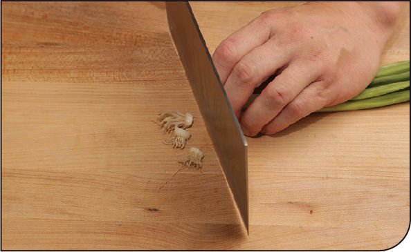
FOR SEGMENTS
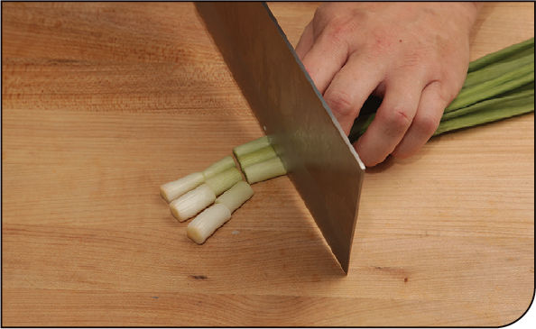
Cut the white and pale green parts of the scallion crosswise into ½- to ¾-inch segments. Save the greens for another use.
FOR FINE SLICES
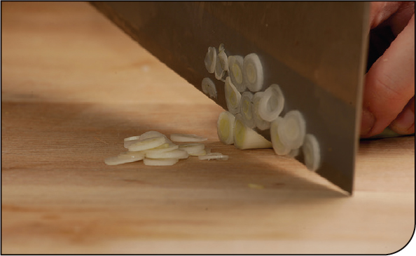
Scallions, like other delicate vegetables and herbs, should be cut using a slicing motion as opposed to chopping. When you chop, you move your knife up and down with very little horizontal motion. This can cause crushing or bruising. Slicing using the full length of the blade and minimal downward pressure creates the cleanest cuts. Here’s a good rule of thumb: the more you can hear yourself slicing, the more you’re crushing those poor scallions. A good, clean slice with a sharp knife should be nearly silent.
I like to employ a method called the back-slice, where you pull your knife blade toward you as you slice, rather than pushing forward away from you.
Hold the scallions with your nonknife hand, curling your fingertips back under your knuckles to keep them protected. Rest the flat part of your knife against the knuckles of your nonknife hand and place the tip of the knife on the cutting board. Slowly pull back the knife, using your knuckles as a guide to thinly slice the scallions. Continue cutting in this manner—slicing as you pull the knife backward—while guiding the scallions to the knife with your nonknife hand.
FOR MINCE
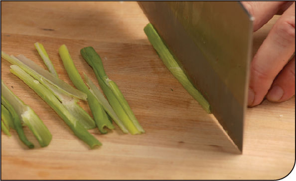
Cut the scallions into 3- to 4-inch segments. Cut each segment lengthwise in half, then each half lengthwise again into quarters.
Collect the quartered segments and slice them crosswise into mince. You can further reduce this mince by rocking back and forth over it with your knife.
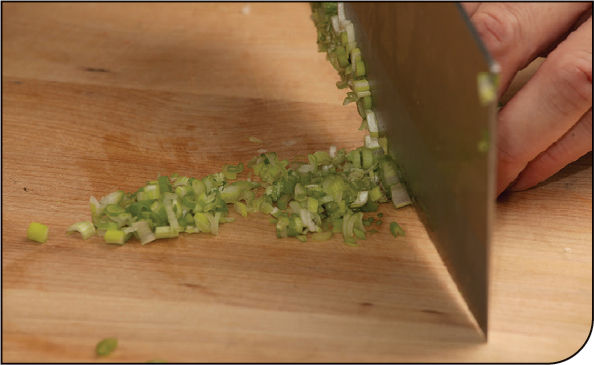
SCALLION HAIRS FOR GARNISH
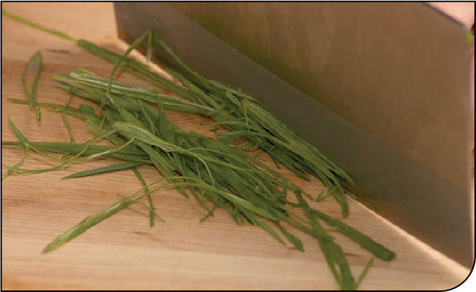
Scallion hairs make a pretty garnish for salads, noodle soups, and other dishes. The process is the same as with the back-slice, but instead of cutting crosswise, slice the scallions nearly parallel to the blade. You may have to crush them a bit with your steadying hand to get them to slice cleanly.
Store the sliced scallions in a container of ice water in the fridge for at least 30 minutes and up to overnight and they’ll absorb liquid, firming up and curling into pretty little threads. (An added benefit of storing the sliced scallions in cold water, at least for those who are sensitive to raw onion flavor, is that it will temper their potency a little, resulting in crisp, fresh, and milder-tasting scallions.)
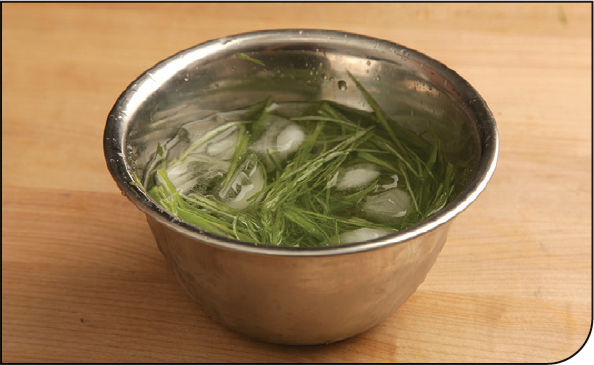
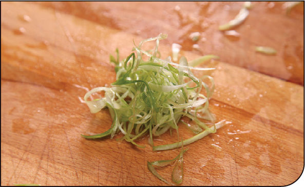
SCALLION BRUSHES
You ever order Peking duck at a Chinese restaurant and get served a bowl of hoisin sauce with some cute little scallion brushes to paint the sauce onto your pancakes? Those little brushes are supereasy to make at home.
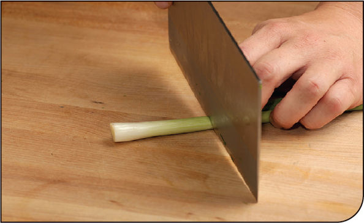
Start by trimming down your scallion to about 2 ½ inches long and trim off the root end as close as you can to the base.
Holding the scallion steady with your nonknife hand, align your knife parallel to the scallion and place the tip of your blade about an inch up from the cut side. Cut through to split the end of the scallion in half.
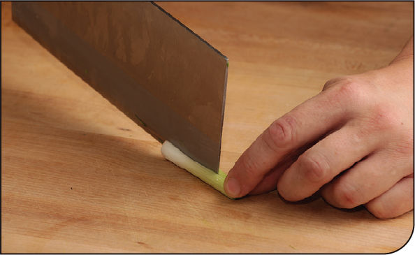
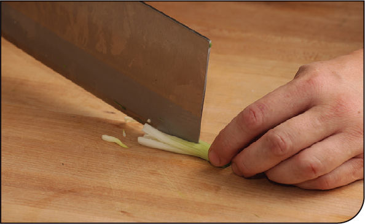
Repeat the process, rotating the scallion a few times so that you’ve made a total of four cuts, dividing the scallion-end into eight individual sections.
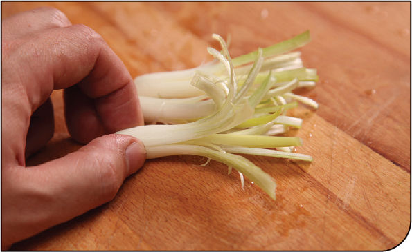
Transfer the brushes to a bowl of ice water in the fridge and let them soak for at least 30 minutes and up to overnight to get them to firm up and curl.